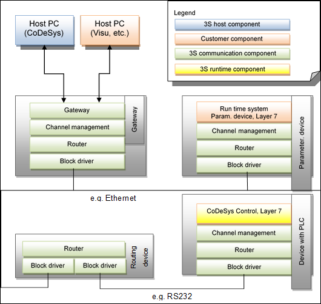
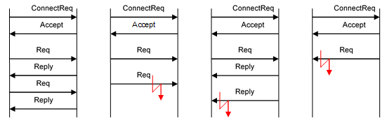

1.5.3. Communication Layers¶
The components of the communication system are based on the ISO/OSI Layer Model. There are 4 components:
- Medium and datagram layer (Layer 2, „block driver”) | This layer handles the transfer of frames between nodes. Media access is located in this layer. In addition, this layer prevents delivery of faulty frames (bit errors). Frame repetition etc. can be implemented as an option.
- Network layer (Layer 3, “router”) | This layer handles routing and addressing. There is no error protection in this layer.
- Messages/protocol layer (Layer 4, “channel management”) | This layer defines a protocol for safe transmission of asynchronous services of any length. This service is asymmetric. It consists of a common part and an associated client or server component.
- Application layer (Layer 7) | This layer defines services based on Layer 4.
The following figure provides an overview of the communication system layers:
1.5.3.1. Block driver (Layer 2)¶
Block drivers map the 3S communication model onto the lower-level network (e.g. Ethernet, CAN, serial). Each network type has its own block driver. The block drivers always send blocks with a specified maximum size. The maximum size (512 bytes) is specified by the block driver. If necessary the packet has to be subdivided into suitable pieces and reassembled at the receiving end. The block driver must ensure that only correct blocks, i.e. blocks without transmission errors, are transferred to the higher-level layer (router). If necessary this must be ensured with suitable measures, e.g. CRC. Faulty blocks may be discarded, since layer 2 is not connection-oriented. Block repetition can optionally be implemented for connections that are particularly susceptible to failure, in order to minimize the fault rate in the overall system.
A block driver can manage several physical (e.g. 2 Ethernet cards) or logical connections simultaneously, although each connection has to be registered separately with the higher-level router.
Block drivers are configured on system startup and are available from that time, provided the lower-level network is available. They can only handle primitive send and receive, i.e. no explicit connection setup or termination. Only one network address is specified as target (see 5.4.4.1), without additional configuration (such as baud rate or start/stop bits).
Communication between two block drivers is on an equal basis, i.e. each of two devices can initiate the communication at any time. If master/slave operation is required for a special communication medium, it must be mapped accordingly. Ideally the connection between the two devices should be permanent.
1.5.3.2. Router (Layer 3)¶
The router is based on Layer 2 (block driver) and is responsible for sending blocks via any number of intermediate levels or lower-level network types. Since block drivers already abstract from the actual network type, routers only see logical CODESYS nodes.
Each node supporting the CODESYS communication system – and therefore any runtime system – implements the router and can therefore pass on packets itself.
With regard to higher levels, the router offers the option of sending packets to any receiver within a control network or receiving packets for certain services (corresponding to ports). Channel management (Layer 4), which offers a secure connection, is one of the services based on the router. The service number is 64. Further services include automatic address assignment, name resolution, or network variable exchange.
1.5.3.3. Channel management (Layer 4)¶
Channel management offers a connection-oriented, secure end-to-end transmission between any two nodes in the control network. Packets of any size can be sent. The maximum size only depends on the resources available in the two end nodes. To this end the size of the communication buffer is determined when the connection is set up. Without optimization, two buffers are required on both sides (send buffer and receive buffer). In general a static buffer for a fixed number of maximum simultaneous connections (channels) is provided in runtime systems.
Layer 4 deals with subdivision of potentially large packets into suitable blocks for the lower-level layers, packet repetition, and correct reassembly of the packets on the receiver side. In addition, the status of the connection is continuously monitored via keep-alive packets and (dynamic) timeouts, so that any interruption of the connection can already be detected at this level, irrespective of the size and type of the service.
Channel management uses a request reply procedure to avoid requests having to be discarded due to insufficient resources. The node that has initiated the connection is the master and therefore the node that may send requests. A new request may only be sent once a reply for the previous request has been received. Similarly, the remote terminal (the slave) must send exactly one reply for each request it receives.
This service is basically divided asymmetrically into a client and a server component using a common base component. The client component is always used on the gateway, the server component on a target device. However, there is no reason why both components should not be implemented on the same node. This node can then execute server and client services simultaneously. This is of interest if two runtime systems are to communicate directly with each other, for example.
1.5.3.4. Application services (Layer 7)¶
Application services use a format with binary tagging in order to achieve upward and downward compatibility of the services. Each node is identified with a unique number (tag) and its length. Together, the tag and the length form the header of a node. The node either contains data with a fixed structure or sub nodes, but never both at the same time.
Each Layer 7 packet starts with a general header that defines, among other parameters, the service to be executed via service group and service number. The service group corresponds to a communication port. A service handler can thus register on a certain service group and will then receive all requests for this service.
If a service requires more space than is offered by the communication buffer for the associated connection, the request has to be split into several service-specific requests (each of which has to be acknowledged with an associated reply).
Each level 7 service handler must be registered at the generic level 7 server (CmpSrv). This can be done in a C component with the following interface function: CAL_ServerRegisterServiceHandler(<ServiceGroupt>, <Handler>);
To handle level 7 services in IEC, there is a different way. For this, the component must register a callback handler at the event manager. So CmpEventMgr.library must be added. Additionally the CmpSrv.library must be added to see, which event parameters are transmitted.
Example:
Declaration:
Result : RTS\_IEC\_RESULT;
hEvent : RTS\_IEC\_EVENT;
Implementation (first cycle in a program or FB_Init method in a function block):
hEvent := EventOpen(EVTPARAMID\_CmpSrv, CMPID\_CmpSrv, Result);
Result := EventRegisterCallbackFunction(hEvent, ADR(<Handler>));
After that, all services with the specified service group are generating an event, at which the IEC event handler is called, e.g.:
Declaration:
FUNCTION EventCallbackFunction : UDINT
VAR_INPUT
pEventParam : POINTER TO EventParam;
END_VAR
VAR
pServiceParam : POINTER TO EVTPARAM_CmpSrv;
END_VAR
Implementation:
pServiceParam := pEventParam^.pParameter;
With pServiceParam, all parameters of a standard service handler are accessible!
The feature of the event manager provides to register a callback method of a function block too. So level 7 services can be handled in an encapsulated function block.